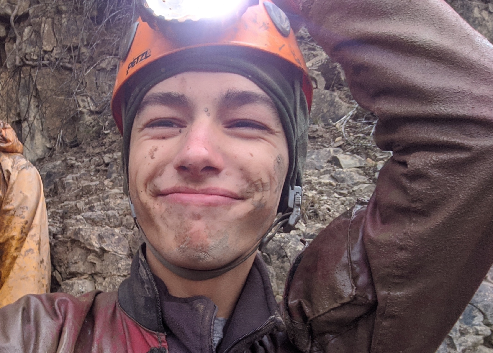
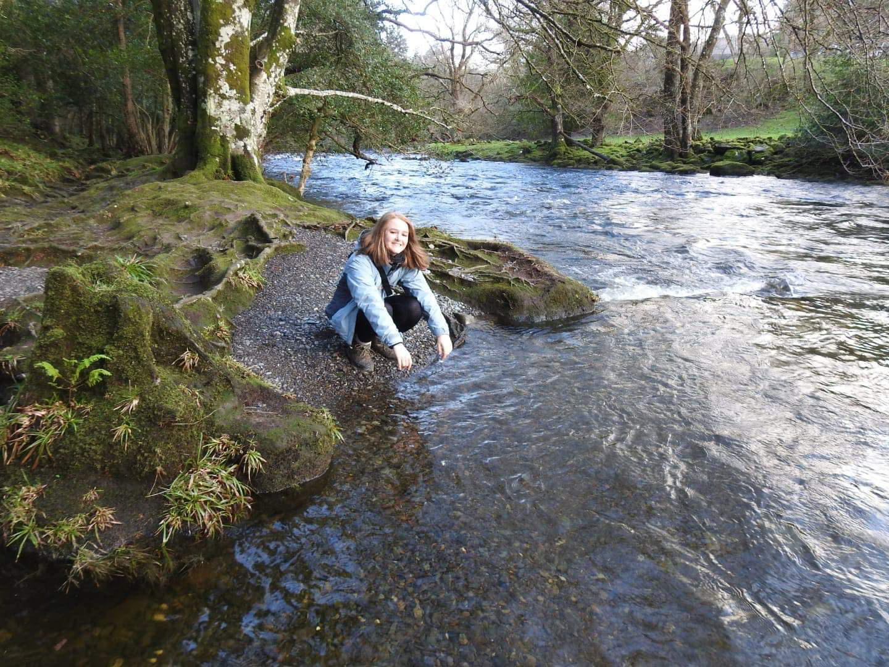
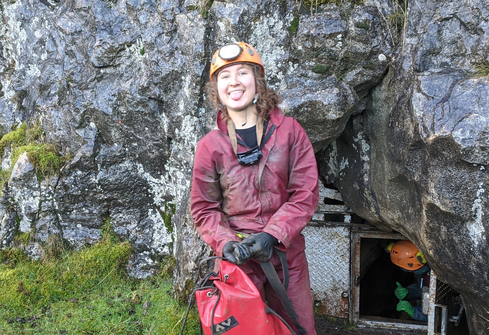
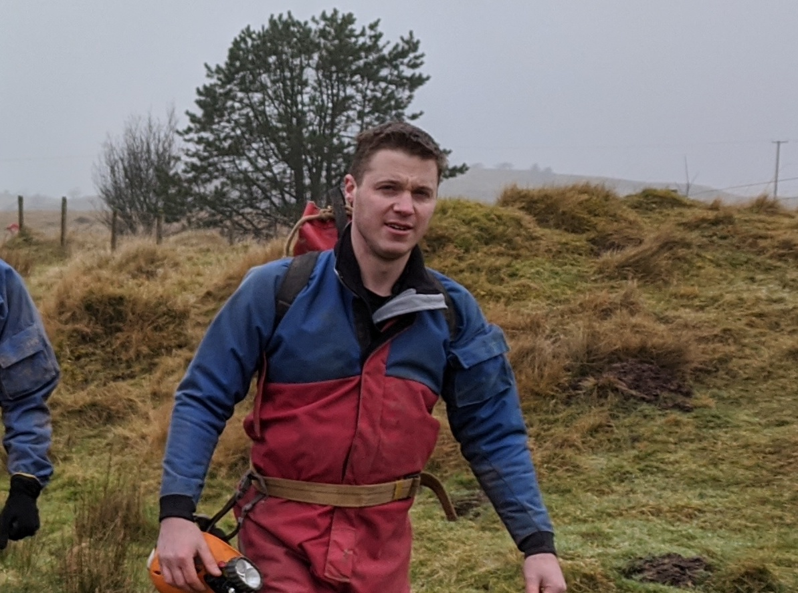

About Us
Welcome! We are Bangor University Caving Club!
We hold regular trips to caves and mines around North Wales, with the occasional trip further away, to places such as South Wales, Mendips, or Yorkshire!
Meet the committee!
Captain

Amelia is our glorious Captain and this statement has totally not been written under duress...
She is a fantastic caver, mountaineer and human being. It is said that first there was Amelia, and then there were caves...
She enjoys holding pets hostage and returning them safely after her bio has been written.
Secretary

This is an example intro for Owen. Bla bla bla.
Treasurer
This is an example intro for Dylan. Bla bla bla.
Social Secretary
This is an example intro for Rhi. Bla bla bla.
Tackle Mistress
This is an example intro for Em. Bla bla bla.
Ray!
Ray had been instructing Kent University Caving Club for 7 years, but moved to Bangor in 2019 and has been responsible for teaching our prospective cave leaders!
His hobbies include complaining about the public, and he aspires to one day graduate to 'real adulthood' and own white goods...
The Stig...

This is an example intro for the Stig. Bla bla bla.